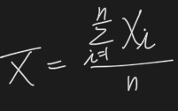

Quantitative Methods
Learning Outcome Statements
Statistical Concepts and Market Returns
7.a. Distinguish between descriptive statistics and inferential statistics, between a population and a sample, and among the types of measurement scales.
- Descriptive statistics summarize the characteristics of a data set.
- Inference statistics are used to make probabilistic statements about a population based on a sample.
- A population includes all members of a specified group, while a sample is a subset of the population used to draw inferences about the population.
- Data may be measured using different scales.
- Nominal scale-data is put into categories that have no particular order.
- Ordinal scale-data is put into categories that can be ordered with respect to some characteristic.
- Interval scale-differences in data values are meaningful, but ratios, such as twice as much or twice as large, are not meaningful.
- Ratio scale-ratios of values such as twice as much or half as large, are meaningful, and zero represents the complete absence of the characteristic being measured.
7.b. Define a parameter, a sample statistic, and a frequency distribution.
- Any measurable characteristic of a population is called a parameter.
- A characteristic of a sample is given by a sample statistic.
- A frequency distribution groups observations into classes, or intervals. An interval is a range of values.
7.c. Calculate and interpret relative frequencies and cumulative relative frequencies, given a frequency distribution.
- Relative frequency is the percentage of total observations falling within an interval.
- Cumulative relative frequency for an interval is the sum of the relative frequencies for all values less than or equal to that interval’s maximum value.
7.d. Describe the properties of a data set presented as a histogram or a frequency polygon.
- A histogram is a bar chart of data that has been grouped into a frequency distribution.
- A frequency polygon plots the midpoint of each interval on the horizontal axis and the absolute frequency for that interval on the vertical axis, and connects the midpoints with straight lines.
- The advantage of histograms and frequency polygons is that we can quickly see where most of the observations lie.
7.e. Calculate and interpret measures of central tendency, including the population mean, sample mean, arithmetic mean, weighted average or mean, geometric mean, harmonic mean, median, and mode.
- The arithmetic mean is the average. Population mean and sample mean are examples of arithmetic means.

- The geometric mean is used to find a compound growth rate.

- The weighted mean weights each value according to its influence.
- The harmonic mean ca be used to find an average purchase price, such as dollars per share for equal periodic investments.
- The median is the midpoint of a data set when the data is arranged from largest to smallest.
- The mode of a data set is the value that occurs most frequently.
7.f. Calculate and interpret quartiles, quintiles, deciles, and percentiles.
- Quantile is the general term for a value at or below which a stated proportion of the data in a distribution lies. Examples of quantiles include:
- Quartiles-the distribution is divided into quarters.
- Quintile-the distribution is divided into fifths.
- Decile-the distribution is divided into tenths.
- Percentile-the distribution is divided into hundredths.
7.g. Calculate and interpret 1) a range and a mean absolute deviation and 2) the variance and standard deviation of a population and of a sample.
- The range is the difference between the largest and smallest values in a data set.
- mean absolute deviation (MAD) is the average of the absolute values of the deviations from the arithmetic mean:

Variance is defined as the mean of the squared deviations from the arithmetic mean or from the expected value of a distribution.
- Population variance

./Untitled%203.png - Sample variance

./Untitled%204.png Standard deviation is the positive square root of the variance and is frequently used as a quantitative measure of risk.
7.h. Calculate and interpret the proportion of observations falling within a specified number of standard deviations of the mean using Chebyshev’s inequality.
- Chebyshev’s inequality states that the proportion of the observations within k standard deviations of the mean is at least 1 - 1 / k^2 for all k > 1. It states that for any distribution, at least:
- 36% of observations lie within +/- 1.25 standard deviations of the mean
- 56% of observations lie within +/- 1.5 standard deviations of the mean
- 75% of observations lie within +/- 2 standard deviations of the mean.
- 89% of observations lie within +/- 3 standard deviations of the mean
- 94% of observations lie within +/- 4 standard deviations of the mean
7.i. Calculate and interpret the coefficient of variance.
- The coefficient of variation for sample data, CV = s / X bar, is the ratio of the standard deviation of the sample to its mean (expected value of the underlying distribution).
7.j. Explain skewness and the meaning of a positively or negatively skewed return distribution.
- Skewness describes the degree to which a distribution is not symmetric about its mean. A right-skewed distribution has positive skewness. A left-skewed distribution has negative skewness.
- Sample skew with an absolute value greater than 0.5 is considered significantly different from zero.
7.k. Describe the relative locations of the mean, median, and mode for a unimodal, nonsymmetrical distribution.
- For a positively skewed, unimodal distribution, the mean is greater than the median, which is greater than the mode.
- For a negatively skewed, unimodal distribution, the mean is less than the median, which is less than the mode.
7.l. Explain measures of sample skewness and kurtosis.
- Kurtosis measures the peakedness of a distribution and the probability of extreme outcomes (thickness of tails).
- Excess kurtosis is measured relative to a normal distribution, which has a kurtosis of 3.
- Positive values of excess kurtosis indicate a distribution that is leptokurtic (fat tails, more peaked) so that the probability of extreme outcomes is greater than for a normal distribution.
- Negative values of excess kurtosis indicate a platykurtic distribution (thin tails, less peaked).
- Excess kurtosis with an absolute value greater than 1 is considered significant.
7.m. Compare the use of arithmetic and geometric means when analyzing investment returns.
- The arithmetic mean return is appropriate for forecasting single period returns in future periods, while the geometric mean is appropriate for forecasting future compound returns over multiple periods.
Probability concepts
8.a. Define a random variable, an outcome, an event, mutually exclusive events, and exhaustive events.
- A random variable is an uncertain value determined by chance.
- An outcome is the realization of a random variable.
- An event is a set of one or more outcomes. Two events that cannot both occur are termed “mutually exclusive” and a set of events that includes all possible outcomes is an “exhaustive” set of events.
8.b. State the two defining properties of probability and distinguish among empirical, subjective, and a priori probabilities.
- The two properties of probability are:
- The sum of the probabilities of all possible mutually exclusive events is 1.
- The probability of any event cannot be greater than 1 or less than 0.
- A priori probability measures predetermined probabilities based on well-defined inputs
- Empirical probability measures probability from observations or experiments
- Subjective probability is an informed guess.
8.c. State the probability of an event in terms of odds for and against the event.
- Probabilities can be stated as odds that an event will or will not occur. If the probability of an event is A out of B trials (A/B), the “odds for” are A to (B - A) and the “odds against” are (B - A) to A).
8.d. Distinguish between unconditional and conditional probabilities.
- Unconditional probability (marginal probability) is the probability of an event occurring.
- Conditional probability, P(A | B), is the probability of an event A occurring given that event B has occurred.
8.e. Explain the multiplication, addition, and total probability rules.
- The multiplication rule of probability is used to determine the joint probability of two events:
- P(AB) = P(A | B) * P(B)
- The addition rule of probability is used to determine the probability that at least one of two events will occur:
- P(A or B) = P(A) + P(B) - P(AB)
- The total probability rule is used to determine the unconditional probability of an event, given conditional probabilities:
- P(A) = P(A | B1)P(B1) + P(A | B2)*P(B2) + … + P(A | BN)P(BN)
- where B1, B2, … BN is a mutually exclusive and exhaustive set of outcomes.
8.f. Calculate and interpret 1) the joint probability of two events, 2) the probability that at least one of two events will occur, given the probability of each and the joint probability of the two events, and 3) a joint probability of any number of independent events.
- The joint probability of two events, P(AB), is the probability that they will both occur. P(AB) = P(A | B) * P(B).
- For independent events, P(A | B) = P(A), so that P(AB) = P(A) + P(B).
- The probability that at least one of two events will occur is P(A or B) = P(A) + P(B) - P(AB).
- For mutually exclusive events, P(A or B) = P(A) + P(B), since P(AB) = 0.
8.g. Distinguish between dependent and independent events.
- The probability of an independent event is unaffected by the occurrence of other event, but the probability of a dependent event is changed by the occurrence of another event. Events A and B are independent if and only if:
- P(A | B) = P(A), or equivalently, P(B | A) = (B)
8.h. Calculate and interpret an unconditional probability using the total probability rule.
- Using the total probability rule, the unconditional probability of A is the probability-weighted sum of the conditional probabilities:

8.i. Explain the use of conditional expectation in investment applications.
- Conditional expected values depend on the outcome of some other event.
- Forecasts of expected values for a stock’s return, earnings, and dividends can be refined, using conditional expected values, when new information arrives that affects the expected outcome.
8.j. Explain the use of a tree diagram to represent an investment problem.
- A tree diagram shows the probabilities of two events and the conditional probabilities of two subsequent events.

8.k. Calculate and interpret covariance and correlation and interpret a scatterplot.
- Covariance measures the extent to which two random variables tend to be above and below their respective means for each joint realization. It can be calculated from a probability model as:

- Sample covariance can be calculated from historical data as:

- Correlation is a standardized measure of association between two random variables.
- It ranges in value from -1 to +1 is equal to

- Scatterplots display the relationship between two variables graphically. They are useful for revealing nonlinear relationships that are not measured by correlation.
- Correlation does not imply that changes in one variable cause changes in the other. Spurious correlation may result by chance or from the relationships of two variables to a third variable.
8.l. Calculate and interpret the expected value, variance, and standard deviation of a random variable and of returns on a portfolio.
- The expected value of a random variable, E(X), equals

- The variance of a random variable, Var(X), equals

- Standard deviation:

- The expected returns and variance of a 2-asset portfolio are given by:

8.m. Calculate and interpret covariance given a joint probability function.
- Given the joint probability for Xi and Yi, i.e., P(XiYi), the covariance is calculated as:

8.n. Calculate and interpret an updated probability using Bayes’ formula.
- Bayes’ formula for updating probabilities based on the occurrence of an event O is:

- Equivalently, based on the tree diagram below,

8.o. Identify the most appropriate method to solve a particular counting problem and solve counting problems using factorial, combination, and permutation concepts.
- The number of ways to order n objects in n factorial, n! = n * (n -1) * (n - 2) * … * 1.

Common Probability Distributions
9.a. Define a probability distribution and distinguish between discrete and continuous random variables and their probability functions.
- A probability distribution lists all the possible outcomes of an experiment, along with their associated probabilities.
- A discrete random variable has positive probabilities associated with a finite number of outcomes.
- A continuous random variable has positive probabilities associated with a range of outcome values-the probability of any single value is zero.
9.b. Describe the set of possible outcomes of a specified discrete random variable.
- The set of possible outcomes of a specific discrete random variable is a finite set of values.
9.c. Interpret a cumulative distribution function.
- A cumulative distribution function (cdf) gives the probability that a random variable will be less than or equal to specific values. The cumulative distribution function for a random variable X may be expressed as F(x) = P(X ≤ x).
9.d. Calculate and interpret probabilities for a random variable, given its cumulative distribution function.
- Given the cumulative distribution function for a random variable, the probability that an outcome will be less than or equal to a specific value is represented by the area under the probability distribution to the left of that value.
9.e. Define a discrete uniform random variable, a Bernoulli random variable, and a binomial random variable.
- A discrete uniform distribution is one where there are n discrete, equally likely outcomes.
- The binomial distribution is a probability distribution for a binomial (discrete) random variable that has two possible outcomes.
9.f. Calculate and interpret probabilities given the discrete uniform and the binomial distribution functions.
- For a discrete uniform distribution with n possible outcomes, the probability for each outcome equals 1/n.
- For a binomial distribution, if the probability of success is p, the probability of x successes in n trials is:

9.g. Construct a binomial tree to describe stock price movement.
- A binomial tree illustrates the probabilities of all the possible values that a variable (such as a stock price) can take on, given the probability of an up0move and the magnitude of an up-move (the up-move factor)

- With an initial stock price S = 50, u = 1.01, d = 1/1.01, and prob(u) = 0.6, we can calculate the possible stock prices after two periods as:

9.h. Define the continuous uniform distribution and calculate and interpret probabilities, given a continuous uniform distribution.
- A continuous uniform distribution is one where the probability of X occurring in a possible range is the length of the range relative to the total of all possible values. Letting a and be be the lower and upper limit of the uniform distribution, respectively, then for:

9.i. Explain the key properties of the normal distribution.
- The normal probability distribution and normal curve have the following characteristics:
- The normal curve is symmetrical and bell-shaped with a single peak at the exact center of the distribution.
- Mean = median = mode, and all are in the exact center of the distribution.
- The normal distribution can be completely defined by its mean and standard deviation because the skew is always zero and kurtosis is always 3.
9.j. Distinguish between a univariate and a multivariate distribution and explain the role of correlation in the multivariate normal distribution.
- Multivariate distributions describe the probabilities for more than one random variable, whereas a univariate distribution is for a single random variable.
- The correlation(s) of a multivariate distribution describes the relation between the outcomes of its variables relative to their expected values.
9.k. Determine the probability that a normally distributed random variable lies inside a given interval.
- A confidence interval is a range within which we have a given level of confidence of finding a point estimate.
- Confidence intervals for any normally distributed random variable are:
- 90%: u +- 1.65 standard deviations
- 95%: u +- 1.96 standard deviations
- 99%: u +- 2.58 standard deviations
- The probability that a normally distributed random variable X will be within A standard deviations of its mean, u, may be calculated as F(A) - F(-A), where F(A) is the cumulative standard normal probability of A, or as 1 - 2[F(-A)].
9.l. Define the standard normal distribution, explain how to standardize a random variable, and calculate and interpret probabilities using the standard normal distribution.
- The standard normal probability distribution has a mean of 0 and a standard deviation of 1.
- A normally distributed random variable X can be standardized as Z and Z will be normally distributed with mean = 0 and standard deviation 1.

- The z-table is used to find the probability that X will be less than or equal to a given value.
9.m. Define shortfall risk, calculate the safety-first ratio, and select an optimal portfolio using Roy’s safety-first criterion.
-= The safety-first ratio for portfolio P, based on a target return RT, is

- Shortfall risk is the probability that a portfolio’s value (or return) will fall below a specific value over a given period of time. Greater safety-first ratios are preferred and indicated a smaller shortfall probability. Roy’s safety-first criterion states that the optimal portfolio minimizes shortfall risk.
9.n. Explain the relationship between normal and lognormal distributions and why the lognormal distribution is used to model asset prices.
- If x is normally distributed, ex follows a lognormal distribution. A lognormal distribution is often used to model asset prices, since a lognormal random variable cannot be negative and can take on any positive value.
9.o. Distinguish between discretely and continuously compounded rates of return and calculate and interpret a continuously compounded rate of return, given a specific holding period return.
- As we decrease the length of discrete compounding periods (e.g., from quarterly to monthly) the effective annual rate increases. As the length of the compounding period in discrete compounding gets shorter and shorter, the compounding becomes continuous, where the effective annual rate = ei - 1.
- For a holding period return (HPR) over any period, the equivalent continuously compounded rate over the period is ln(1 + HPR)/.
9.p. Explain Monte Carlo simulation and describe its applications and limitations.
- Monte Carlo simulation uses randomly generated values for risk factors, based on their assumed distributions, to produce a distribution of possible security values. Its limitations are that it is fairly complex and will provide answers that are no better than the assumptions used.
9.q. Compare Monte Carlo simulation and historical simulation.
- Historical simulation uses randomly selected past changes in risk factors to generate a distribution of possible security values, in contrast to Monte Carlo simulation, which uses randomly generated values. a limitation of historical simulation is that it cannot consider the effects of significant events that did not occur in the sample period.
Sampling and Estimation
10.a. Define simple random sampling and a sampling distribution.
- Simple random sampling is a method of selecting a sample in such a way that each item or person in the population being studied has the same probability of being included in the sample.
- A sampling distribution is the distribution of all values that a sample statistic can take on when computed from samples of identical size randomly drawn from the same population.
10.b. Explain sampling error.
- Sampling error is the difference between a sample statistic and its corresponding population parameter (e.g., the sample mean minus the population mean).
10.c. Distinguish between simple random and stratified random sampling.
- Stratified random sampling involves randomly selecting samples proportionally from subgroups that are formed based on one or more distinguishing characteristics, so that the sample will have the same distribution of these characteristics as the overall population.
10.d. Distinguish between time-series and cross-sectional data.
- Time-series data consists of observations taken at specific and equally spaced points in time.
- Cross-sectional data consists of observations taken at a single point in time.
10.e. Explain the central limit theorem and its importance.
- The central limit theorem states that for a population with a mean u and a finite variance sigma squared, the sampling distribution of the sample mean of all possible samples of size n (for n ≥ 30) will be approximately normally distributed with a mean equal to u and a variance equal to sigma squared / n.
10.f. Calculate and interpret the standard error of the sample mean.

10.g. Identify and describe desirable properties of an estimator.
- Desirable statistical properties of an estimator include unbiasedness (sign of estimation error is random), efficiency (lower sampling error than any other unbiased estimator), and consistency (variance of sampling error decreases with larger sample size).
10.h. Distinguish between a point estimate and a confidence interval estimate of a population parameter.
- Point estimates are single value estimates of population parameters. An estimator is a formula used to compute a point estimate.
- Confidence intervals are ranges of values, within which the actual value of the parameter will lie with a given probability.
- Confidence interval = point estimate +- (reliability factor * standard error)
- The reliability factor is a number that depends on the sampling distribution of the point estimate and the probability that the point estimate falls in the confidence interval.
10.i. Describe properties of Student’s t-distribution and calculate and interpret its degrees of freedom.
- The t-distribution is similar, but not identical, to the normal distribution in shape-it is defined by the degrees of freedom and has fatter tails compared to the normal distribution.
- Degrees of freedom for the t=distribution are equal to n - 1. Student’s t-distribution is closer to the normal distribution when df is greater, and confidence intervals are narrower when df is greater.
10.j. Calculate and interpret a confidence interval for a population mean, given a normal distribution with 1) a known population variance, 2) an unknown population variance, or 3) an unknown population variance and a large sample size.
- For a normally distributed population, a confidence interval for its mean can be constructed using a z-statistic when variance is known, and a t-statistic when the variance is unknown. The z-statistic is acceptable in the case of a normal population with an unknown variance if the sample size is large (30+).

10.k. Describe the issues regarding selection of the appropriate sample size, data-mining bias, sample selection bias, survivorship bias, look-ahead bias, and time-period bias.
- Increasing the sample size will generally improve parameter estimates and narrow confidence intervals. The cost of more data must be weighed against these benefits, and adding data that is not generated by the same distribution will not necessarily improve accuracy or narrow confidence intervals.
- Potential mistakes in the sampling method can bias results. These biases include data mining (significant relationships that have occurred by chance), sample selection bias (selection is nonrandom), look-ahead bias (basing the test at a point in time on data not available at that time), survivorship bias (using only surviving mutual funds, hedge funds, etc.), and time-period bias (the relation does not hold over other time periods).
Hypothesis Testing
11.a. Define a hypothesis, describe the steps of hypothesis testing, and describe and interpret the choice of the null and alternative hypotheses.
- The hypothesis testing process requires a statement of a null and an alternative hypothesis, the selection of the appropriate test statistic, specification of the significance level, a decision rule, the calculation of a sample statistic, a decision regarding the hypotheses based on the test, and a decision based on the test results.
- The null hypothesis is what the researcher wants to reject. The alternative hypothesis is what the researcher wants to support, and it is accepted when the null hypothesis is rejected.
11.b. Distinguish between one-tailed and two-tailed tests of hypotheses.
- A two-tailed test results from a two-sided alternative hypothesis.
- A one-tailed test results from a one-sided alternative hypothesis.
11.c. Explain a test statistic, Type I and Type II errors, a significance level, and how significance levels are used in hypothesis testing.
- The test statistic is the value that a decision about a hypothesis will be based on. For a test about the value of the mean of a distribution:
- test statistic = (sample mean - hypothesized mean) / standard error of sample mean
- A Type I error is the rejection of the null hypothesis when it is actually true, while a Type II error is the failure to reject the null hypothesis when it is actually false.
- The significance level can be interpreted as the probability that a test statistic will reject the null hypothesis by chance when it is actually true. A significance level must be specified to select the critical values for the test.
11.d. Explain a decision rule, the power of a test, and the relation between confidence intervals and hypothesis tests.
- Hypothesis testing compares a computed test statistic to a critical value at a stated level of significance, which is the decision rule for the test.
- The power of a test is the probability of rejecting the null when it is false. The power of a test = 1 - P(Type II error).
- A hypothesis about a population parameter is rejected when the sample statistic lies outside a confidence interval around the hypothesized value for the chosen level of significance.
11.e. Distinguish between a statistical result and an economically meaningful result.
- Statistical significance does not necessarily imply economic significance. Even though a test statistic is significant statistically, the size of the gains to a strategy to exploit a statistically significant result may be absolutely small or simply not great enough to outweigh transactions costs.
11.f. Explain and interpret the p-value as it relates to hypothesis testing.
- The p-value for a hypothesis test is the smallest significance level for which the hypothesis would be rejected.
11.g. Identify the appropriate test statistic and interpret the results for a hypothesis test concerning the population mean of both large and small samples when the population is normally or approximately normally distributed and the variance is 1) known or 2) unknown.
- With unknown population variance, the t-statistic is used for tests about the mean of a normally distributed population. If the population variance is know, the appropriate test statistic is Z for tests about the mean of a population.

11.h. Identify the appropriate test statistic and interpret the results for a hypothesis test concerning the equality of the population means of two at least approximately normally distributed populations, based on independent random samples with 1) equal or 2) unequal assumed variances.
- For two independent samples from two normally distributed populations, the difference in means can be tested with t-statistic. When the two population variances are assumed to be equal, the denominator is based on the variance of the pooled samples, but when sample variances are assumed to be unequal, the denominator is based on a combination of the two samples’ variance.
11.i. Identify the appropriate test statistic and interpret the results for a hypothesis test concerning the mean difference fo two normally distributed populations.
- A paired comparisons test is concerned with the mean of the differences between the paired observations of two dependent, normally distributed samples.

11.j. Identify the appropriate test statistic and interpret the results for a hypothesis test concerning 1) the variance of a normally distributed population, and 2) the equality of the variances of two normally distributed populations based on two independent random samples.
- The test of a hypothesis about the population variance for a normally distributed population uses a chi-square test statistic.
- The test comparing two variances based on independent samples from two normally distributed populations uses an F-distributed test statistic.

11.k. Formulate a test of the hypothesis that the population correlation coefficient equals zero and determine whether the hypothesis is rejected at a given level of significance.
- To test a hypothesis that a population correlation coefficient equals zero, the appropriate test statistic is a t-statistic with n - 2 degrees of freedom.

11.l. Distinguish between parametric and nonparametric tests and describe situations in which the use of nonparametric tests may be appropriate.
- Parametric tests, like the t-test, F-test, and chi-square tests, make assumptions regarding the distribution of the population from which samples are drawn. Nonparametric tests either do not consider a particular population parameter or have few assumptions about the sampled population. Nonparametric tests are used when the assumptions of parametric tests can’t be supported or when the data are not suitable for parametric tests.